건축기사 (2022-03-05 기출문제)
1과목: 건축계획
1. 특수전시기법에 관한 설명으로 옳지 않은 것은?
- 하모니카 전시는 동일 종류의 전시물을 반복 전시하는 경우에 사용된다.
- 파노라마 전시는 연속적인 주제를 연관성 있게 표현하기 위해 선형의 파노라마로 연출하는 기법이다.
- 디오라마 전시는 하나의 사실 또는 주제의 시간 상황을 고정시켜 연출하는 것으로 현장에 임한 느낌을 준다.
- 아일랜드 전시는 실물을 직접 전시할 수 없거나 오브제 전시만의 한계를 극복하기 위해 영상매체를 사용하여 전시하는 기법이다.
(정답률: 87%)

2. 병원건축의 병동배치방법 중 분관식(pavilion type)에 관한 설명으로 옳은 것은?
- 각종 설비 시설의 배관길이가 짧아진다.
- 대지의 크기와 관계없이 적용이 용이하다.
- 각 병실을 남향으로 할 수 있어 일조와 통풍 조건이 좋다.
- 병동부는 5층 이상의 고층으로 하며 환자는 엘리베이터로 운송된다.
(정답률: 74%)
3. 전시실의 순회형식에 관한 설명으로 옳지 않은 것은?
- 중앙홀 형식은 각 실에 직접 들어갈 수 없다는 단점이 있다.
- 연속순회 형식은 많은 실을 순서별로 통하여야 하는 불편이 있다.
- 갤러리 및 코리도 형식에서는 복도 자체도 전시공간으로 이용할 수 있다.
- 갤러리 및 코리도 형식은 각 실에 직접 들어갈 수 있으며, 필요 시 독립적으로 폐쇄할 수 있다.
(정답률: 80%)
4. 공동주택의 단지계획에서 보차분리를 위한 방식 중 평면분리에 해당하는 방식은?
- 시간제 차량통행
- 쿨드삭(cul-de-sac)
- 오버브리지(overbridge)
- 보행자 안전참(pedestrian safecross)
(정답률: 72%)
5. 다음 중 터미널 호텔의 종류에 속하지 않는 것은?
- 해변 호텔
- 부두 호텔
- 공항 호텔
- 철도역 호텔
(정답률: 85%)
6. 레이트 모던(Late Modern) 건축양식에 관한 설명으로 옳지 않은 것은?
- 기호학적 분절을 추구하였다.
- 퐁피두 센터는 이 양식에 부합되는 건축물이다.
- 공업기술을 바탕으로 기술적 이미지를 강조하였다.
- 대표적 건축가로는 시저 펠리, 노만 포스터 등이 있다.
(정답률: 55%)
7. 다음 중 백화점 건물의 기둥간격 결정요소와 가장 거리가 먼 것은?
- 진열장의 치수
- 고객 동선의 길이
- 에스컬레이터의 배치
- 지하주차장의 주차방식
(정답률: 66%)
8. 주택의 부엌에서 작업 순서에 따른 작업대 배열로 가장 알맞은 것은?
- 냉장고-싱크대-조리대-가열대-배선대
- 싱크대-조리대-가열대-냉장고-배선대
- 냉장고-조리대-가열대-배선대-싱크대
- 싱크대-냉장고-조리대-배선대-가열대
(정답률: 86%)
9. 도서관 출납 시스템에 관한 설명으로 옳지 않은 것은?
- 자유개가식은 책 내용의 파악 및 선택이 자유롭다.
- 자유개가식은 서가의 정리가 잘 안되면 혼란스럽게 된다.
- 안전개가식은 서가열람이 가능하여 책을 직접뽑을 수 있다.
- 폐가식은 서가와 열람실에서 감시가 필요하나 대출절차가 간단하여 관원의 작업량이 적다.
(정답률: 81%)
10. 르 꼬르뷔지에가 주장한 근대건축 5원칙에 속하지 않는 것은?
- 필로티
- 옥상정원
- 유기적 공간
- 자유로운 평면
(정답률: 73%)
11. 다음 중 사무소 건축에서 기준층 평면형태의 결정요소와 가장 거리가 먼 것은?
- 동선상의 거리
- 구조상 스팬의 한도
- 사무실 내의 책상 배치 방법
- 덕트, 배선, 배관 등 설비시스템상의 한계
(정답률: 52%)
12. 다음 설명에 알맞은 학교운영방식은?
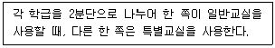
- 달톤형
- 플래툰형
- 개방 학교
- 교과교실형
(정답률: 75%)
13. 주택 부엌의 가구 배치 유형 중 병렬형에 관한 설명으로 옳은 것은?
- 연속된 두 벽면을 이용하여 작업대를 배치한 형식이다.
- 폭이 길이에 비해 넓은 부엌의 형태에 적당한 유형이다.
- 작업면이 가장 넓은 배치 유형으로 작업효율이 좋다.
- 좁은 면적 이용에 효과적이므로 소규모 부엌에 주로 이용된다.
(정답률: 58%)
14. 극장 무대 주위의 벽에 6~9m 높이로 설치되는 좁은 통로로, 그리드 아이언에 올라가는 계단과 연결되는 것은?
- 록 레일
- 사이클로라마
- 플라이 갤러리
- 슬라이딩 스테이지
(정답률: 74%)
15. 다음 중 다포식(多包式) 건물에 속하지 않는 것은?
- 서울 동대문
- 창덕궁 돈화문
- 전등사 대웅전
- 봉정사 극락전
(정답률: 67%)
16. 이슬람(사라센) 건축 양식에서 미나렛(Minaret)이 의미하는 것은?
- 이슬람교의 신학원 시설
- 모스크의 상징인 높은 탑
- 메카 방향으로 설치된 실내 제단
- 열주나 아케이드로 둘러싸인 중정
(정답률: 65%)
17. 아파트의 단면형식 중 메조넷 형식(maisonnette type)에 관한 설명으로 옳지 않은 것은?
- 하나의 주거단위가 복층 형식을 취한다.
- 양면 개구부에 의한 통풍 및 채광이 좋다.
- 주택 내의 공간의 변화가 없으며 통로에 의해 유효면적이 감소한다.
- 거주성, 특히 프라이버시는 높으나 소규모 주택에는 비경제적이다.
(정답률: 71%)
18. 기계공장에서 지붕의 형식을 톱날지붕으로 하는 가장 주된 이유는?
- 소음을 작게 하기 위하여
- 빗물의 배수를 충분히 하기 위하여
- 실내 온도를 일정하게 유지하기 위하여
- 실내의 주광조도를 일정하게 하기 위하여
(정답률: 79%)
19. 상점 정면(facade)구성에 요구되는 5가지 광고요소(AIDMA 법칙)에 속하지 않는 것은?
- Attention(주의)
- Identity(개성)
- Desire(욕구)
- Memory(기억)
(정답률: 78%)
20. 사무소 건축의 오피스 랜드스케이핑(office landscaping)에 관한 설명으로 옳지 않은 것은?
- 의사전달, 작업흐름의 연결이 용이하다.
- 일정한 기하학적 패턴에서 탈피한 형식이다.
- 작업단위에 의한 그룹(group)배치가 가능하다.
- 개인적 공간으로의 분할로 독립성 확보가 용이하다.
(정답률: 82%)
2과목: 건축시공
21. 건축물에 사용되는 금속자재와 그 용도가 바르게 연결되지 않은 것은?
- 경량철골 M-BAR : 경량벽체 시공을 위한 구조용 지지틀
- 코너비드 : 벽, 기둥 등의 모서리에 대는 보호용 철물
- 논슬립 : 계단에 사용하는 미끄럼 방지 철물
- 조이너 : 천장, 벽 등의 이음새 감추기용 철물
(정답률: 61%)
22. 네트워크 공정표에서 작업의 상호관계만을 도시하기 위하여 사용하는 화살선을 무엇이라 하는가?
- event
- dummy
- activity
- critical path
(정답률: 74%)
23. 건축용 석재 사용 시 주의사항으로 옳지 않은 것은?
- 석재를 구조재로 사용 시 압축강도가 큰 것을 선택하여 사용할 것
- 석재를 다듬어 쓸 때는 석질이 균일한 것을 사용할 것
- 동일 건축물에는 다양한 종류 및 다양한 산지의 석재를 사용할 것
- 석재를 마감재로 사용 시 석리와 색채가 우아한 것을 선택하여 사용할 것
(정답률: 79%)
24. 린건설(Lean Construction)에서의 관리방법으로 옳지 않은 것은?
- 변이관리
- 당김생산
- 대량생산
- 흐름생산
(정답률: 64%)
25. 건축공사 시 직접공사비 구성 항목으로 옳게 짝지어진 것은?
- 재료비, 노무비, 장비비, 간접공사비
- 재료비, 노무비, 외주비, 간접공사비
- 재료비, 노무비, 일반관리비, 경비
- 재료비, 노무비, 외주비, 경비
(정답률: 64%)
26. 벽돌쌓기 시 벽면적 1m2당 소요되는 벽돌(190×90×57mm)의 정미량(매)과 모르타르량(m3)으로 옳은 것은? (단, 벽두께 1.0B, 모르타르의 재료량은 할증이 포함된 것이며, 배합비는 1:3이다.)
- 벽돌매수 : 224매, 모르타르량 : 0.078m3
- 벽돌매수 : 224매, 모르타르량 : 0.049m3
- 벽돌매수 : 149매, 모르타르량 : 0.078m3
- 벽돌매수 : 149매, 모르타르량 : 0.049m3
(정답률: 44%)
27. 금속커튼월의 성능시험 관련 항목과 가장 거리가 먼 것은?
- 내동해성 시험
- 구조시험
- 기밀시험
- 정압수밀시험
(정답률: 59%)
28. 석재 설치 공법 중 오픈조인트공법의 특징으로 옳지 않은 것은?
- 등압이론 방식을 적용한 수밀방식이다.
- 압력차에 의해서 빗물을 차단할 수 있다.
- 실링재가 많이 소요된다.
- 층간변위에도 유동적으로 변위를 흡수할 수 있으므로 파손 확률이 적어진다.
(정답률: 57%)
29. 웰 포인트 공법에 관한 설명으로 옳지 않은 것은?
- 중력배수가 유효하지 않은 경우에 주로 쓰인다.
- 지하수위를 저하시키는 공법이다.
- 인접지반과 공동매설물 침하에 주의가 필요한 공법이다.
- 점토질의 투수성이 나쁜 지질에 적합하다.
(정답률: 67%)
30. 타일크기가 10cm×10cm이고 가로세로 줄눈을 6mm로 할 때 면적 1m2에 필요한 타일의 정미수량은?
- 94매
- 92매
- 89매
- 85매
(정답률: 59%)
31. 콘크리트의 압축강도를 시험하지 않을 경우 다음과 같은 조건에서의 거푸집널 해체 시기로 옳은 것은?
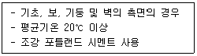
- 1일
- 2일
- 3일
- 4일
(정답률: 52%)
32. 건축공사의 도급계약서 내용에 기재하지 않아도 되는 항목은?
- 공사의 착수시기
- 재료의 시험에 관한 내용
- 계약에 관한 분쟁 해결방법
- 천재 및 그 외의 불가항력에 의한 손해 부담
(정답률: 63%)
33. 지질조사를 통한 주상도에서 나타나는 정보가 아닌 것은?
- N치
- 투수계수
- 토층별 두께
- 토층의 구성
(정답률: 64%)
34. 레디믹스트 콘크리트 발주 시 호칭규격인 25 – 24 – 150 에서 알 수 없는 것은?
- 염화물 함유량
- 슬럼프(Slump)
- 호칭강도
- 굵은 골재의 최대치수
(정답률: 76%)
35. Top-Down공법(역타공법)에 관한 설명으로 옳지 않은 것은?
- 지하와 지상작업을 동시에 한다.
- 주변지반에 대한 영향이 적다.
- 수직부재 이음부 처리에 유리한 공법이다.
- 1층 슬래브의 형성으로 작업공간이 확보된다.
(정답률: 53%)
36. 도장공사 시 유의사항으로 옳지 않은 것은?
- 도장마감은 도막이 너무 두껍지 않도록 얇게 몇 회로 나누어 실시한다.
- 도장을 수회 반복할 때에는 칠의 색을 동일하게 하여 혼동을 방지해야 한다.
- 칠하는 장소에서 저온, 다습하고 환기가 충분하지 못할 때는 도장작업을 금지해야 한다.
- 도장 후 기름, 산, 수지, 알칼리 등의 유해물이 배어 나오거나 녹아 나올 때에는 재시공한다.
(정답률: 78%)
37. 철골부재용접 시 겹침이음, T자이음 등에 사용되는 용접으로 목두께의 방향이 모재의 면과 45° 또는 거의 45°의 각을 이루는 것은?
- 필릿용접
- 완전용입 맞댐용접
- 부분용입 맞댐용접
- 다층용접
(정답률: 70%)
38. 타일 붙임 공법에 쓰이는 용어 중 거푸집에 전용 시트를 붙이고, 콘크리트 표면에 요철을 부여하여 모르타르가 파고 들어가는 것에 의해 박리를 방지하는 공법은?
- 개량압착 붙임 공법
- MCR 공법
- 마스크 붙임 공법
- 밀착 붙임 공법
(정답률: 50%)
39. 아래 설명은 어느 방식에 해당되는가?
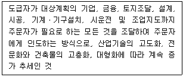
- 프로젝트관리방식(PM)
- 공사관리방식(CM)
- 파트너링방식
- 턴키방식
(정답률: 56%)
40. 아스팔트 방수재료에 관한 설명으로 옳지 않은 것은?
- 아스팔트 컴파운드는 블로운 아스팔트에 동식물성 섬유를 혼합한 것이다.
- 아스팔트 프라이머는 아스팔트 싱글을 용제로 녹인 것이다.
- 아스팔트 펠트는 섬유원지에 스트레이트 아스팔트를 가열용해하여 흡수시킨 것이다.
- 아스팔트 루핑은 원지에 스트레이트 아스팔트를 침투 시키고 양면에 컴파운드를 피복한 후 광물질 분말을 살포시킨 것이다.
(정답률: 43%)
3과목: 건축구조
41. 그림과 같은 단순보의 양단 수직반력을 구하면?
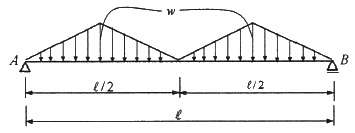
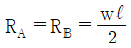
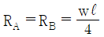
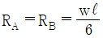
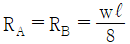
(정답률: 64%)
42. 강도설계법으로 설계된 보에서 스터럽이 부담하는 전단력이 Vs = 265 kN일 경우 수직 스터럽의 적절한 간격은? (단, Av = 2×127mm2(U형 2-D13), fyt = 350MPa, bw×d = 300×450mm)
- 120mm
- 150mm
- 180mm
- 210mm
(정답률: 51%)
43. 부동침하의 원인과 가장 거리가 먼 것은?
- 건물이 경사지반에 근접되어 있을 경우
- 건물이 이질지반에 걸쳐 있을 경우
- 이질의 기초구조를 적용했을 경우
- 건물의 강도가 불균등할 경우
(정답률: 58%)
44. 바람의 난류로 인해서 발생되는 구조물의 동적 거동성분을 나타내는 것으로 평균변위에 대한 최대변위의 비를 통계적인 값으로 나타낸 계수는?
- 지형계수
- 가스트영향계수
- 풍속고도분포계수
- 풍력계수
(정답률: 67%)
45. 다음 용접기호에 대한 옳은 설명은?
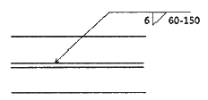
- 맞댐용접이다.
- 용접되는 부위는 화살의 반대쪽이다.
- 유효목두께는 6mm이다.
- 용접길이는 60mm이다.
(정답률: 51%)
46. 그림과 같은 강접골조에 수평력 P=10kN이 작용하고 기둥의 강비 k=∞인 경우, 기둥의 모멘트가 최대가 되는 위치 h0는? (단, 괄호안의 기호는 강비이다.)
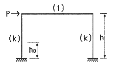
- 0
- 0.5h
- (4/7)h
- h
(정답률: 55%)
47. 강구조에서 기초콘크리트에 매입되어 주각부의 이동을 방지하는 역할을 하는 것은?
- 앵커 볼트
- 턴 버클
- 클립 앵글
- 사이드 앵글
(정답률: 64%)
48. 그림에서 파단선 a-1-2-3-d의 인장재의 순단면적은? (단, 판두께는 10mm, 볼트 구멍지름은 22mm)
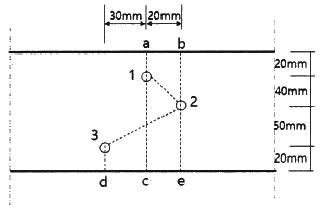
- 690mm2
- 790mm2
- 890mm2
- 990mm2
(정답률: 56%)
49. 다음과 같은 조건의 단면을 가진 부재의 균열모멘트 Mcr을 구하면?
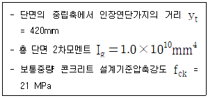
- 50.6 kNㆍm
- 53.3 kNㆍm
- 62.5 kNㆍm
- 68.8 kNㆍm
(정답률: 38%)
50. 강도설계법에서 직접설계법을 이용한 콘크리트 슬래브 설계 시 적용조건으로 옳지 않은 것은?
- 각 방향으로 3경간 이상 연속되어야 한다.
- 슬래브 판들은 단변 경간에 대한 장변 경간의 비가 2 이하인 직사각형이어야 한다.
- 각 방향으로 연속한 받침부 중심간 경간 차이는 긴 경간의 1/3 이하이어야 한다.
- 모든 하중은 슬래브판의 특정지점에 작용하는 집중하중이어야 하며 활하중은 고정하중의 3배 이하이어야 한다.
(정답률: 54%)
51. 인장을 받는 이형철근의 정착길이(ld)는 기본정착길이(lab)에 보정계수를 곱하여 산정한다. 다음 중 이러한 보정계수에 영향을 미치는 사항이 아닌 것은?
- 하중계수
- 경량콘크리트 계수
- 에폭시 도막 계수
- 철근배치 위치계수
(정답률: 37%)
52. 직경(D) 30mm, 길이(L) 4m인 강봉에 90kN의 인장력이 작용할 때 인장응력(σt)과 늘어난 길이(△L)는 약 얼마인가? (단, 강봉의 탄성계수 E=200,000 MPa)
- σt = 127.3 MPa, △L = 1.43mm
- σt = 127.3 MPa, △L = 2.55mm
- σt = 132.5 MPa, △L = 1.43mm
- σt = 132.5 MPa, △L = 2.55mm
(정답률: 43%)
53. 동일재료를 사용한 캔틸레버 보에서 작용하는 집중하중의 크기가 P1 = P2 일 때, 보의 단면이 그림과 같다면 최대처짐 y1 : y2 의 비는?
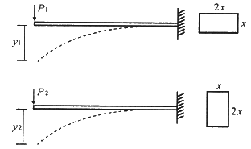
- 2 : 1
- 4 : 1
- 8 : 1
- 16 : 1
(정답률: 55%)
54. 인장시험을 통하여 얻어진 탄소강의 응력-변형도 곡선에서 변형도 경화영역의 최대응력을 의미하는 것은?
- 인장강도
- 항복강도
- 탄성강도
- 비례한도
(정답률: 44%)
55. 고층건물의 구조형식 중에서 건물의 중간층에 대형 수평부재를 설치하여 횡력을 외곽기둥이 분담할 수 있도록 한 형식은?
- 트러스 구조
- 골조 아웃리거 구조
- 튜브 구조
- 스페이스 프레임 구조
(정답률: 63%)
56. 그림과 같은 기둥단면이 300mm×300mm인 사각형 단주에서 기둥에 발생하는 최대압축응력은? (단, 부재의 재질은 균등한 것으로 본다.)
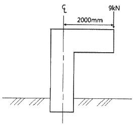
- -2.0 MPa
- -2.6 MPa
- -3.1 MPa
- -4.1 MPa
(정답률: 39%)
57. 다음 그림과 같은 트러스의 반력 RA 와 RB 는?
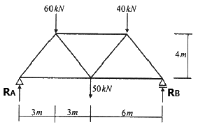
- RA = 60 kN, RB = 90 kN
- RA = 70 kN, RB = 80 kN
- RA = 80 kN, RB = 70 kN
- RA = 100 kN, RB = 50 kN
(정답률: 52%)
58. 점 A에 작용하는 두 개의 힘 P1 과 P2 의 합력을 구하면?
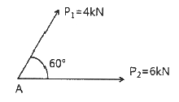
- √72 kN
- √74 kN
- √76 kN
- √78 kN
(정답률: 41%)
59. 표준갈고리를 갖는 인장 이형철근(D13)의 기본정착길이는? (단, D13의 공칭지름 : 12.7mm, fck = 27 MPa, fy = 400 MPa, β = 1.0, mc = 2300 kg/m3)
- 190mm
- 2⑤mm
- 220mm
- 235mm
(정답률: 43%)
60. H형강이 사용된 압축재의 양단이 핀으로 지지되고 부재 중간에서 x축 방향으로만 이동할 수 없도록 지지되어 있다. 부재의 전 길이가 4m일 때 세장비는? (단, rx = 8.62cm, ry = 5.02cm임)
- 26.4
- 36.4
- 46.4
- 56.4
(정답률: 44%)
4과목: 건축설비
61. 실내에 4500W를 발열하고 있는 기기가 있다. 이 기기의 발열로 인해 실내 온도상승이 생기지 않도록 환기를 하려고 할 때, 필요한 최소 환기량은? (단, 공기의 밀도 1.2kg/m3, 비열 1.01kJ/kgㆍK, 실내온도 20℃, 외기온도 0℃이다.)
- 약 452m3/h
- 약 668m3/h
- 약 856m3/h
- 약 928m3/h
(정답률: 55%)
62. 주위 온도가 일정 온도 이상으로 되면 동작하는 자동화재탐지설비의 감지기는?
- 이온화식 감지기
- 차동식 스폿형 감지기
- 정온식 스폿형 감지기
- 광전식 스폿형 감지기
(정답률: 73%)
63. 습공기의 엔탈피에 관한 설명으로 옳은 것은?
- 건구온도가 높을수록 커진다.
- 절대습도가 높을수록 작아진다.
- 수증기의 엔탈피에서 건공기의 엔탈피를 뺀 값이다.
- 습공기를 냉각ㆍ가습할 경우, 엔탈피는 항상 감소한다.
(정답률: 54%)
64. 조명기구의 배광에 따른 분류 중 직접조명형에 관한 설명으로 옳은 것은?
- 상향광속과 하향광속이 거의 동일하다.
- 천장을 주광원으로 이용하므로 천장의 색에 대한 고려가 필요하다.
- 매우 넓은 면적이 광원으로서의 역할을 하기 때문에 직사 눈부심이 없다.
- 작업면에 고조도를 얻을 수 있으나 심한 휘도차 및 짙은 그림자가 생긴다.
(정답률: 66%)
65. 다음 중 건축물 실내공간의 잔향시간에 가장 큰 영향을 주는 것은?
- 실의 용적
- 음원의 위치
- 벽체의 두께
- 음원의 음압
(정답률: 66%)
66. 다음 설명에 알맞은 통기관의 종류는?
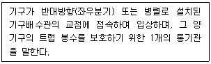
- 공용통기관
- 결합통기관
- 각개통기관
- 신정통기관
(정답률: 33%)
67. 습공기가 냉각되어 포함되어 있던 수증기가 응축되기 시작하는 온도를 의미하는 것은?
- 노점온도
- 습구온도
- 건구온도
- 절대온도
(정답률: 59%)
68. 변전실에 관한 설명으로 옳지 않은 것은?
- 건축물의 최하층에 설치하는 것이 원칙이다.
- 용량의 증설에 대비한 면적을 확보할 수 있는 장소로 한다.
- 사용부하의 중심에 가깝고, 간선의 배선이 용이한 곳으로 한다.
- 변전실의 높이는 바닥의 케이블트렌치 및 무근 콘크리트 설치 여부 등을 고려한 유효 높이로 한다.
(정답률: 60%)
69. 10Ω의 저항 10개를 직렬로 접속할 때의 합성저항은 병렬로 접속할 때의 합성저항의 몇 배가 되는가?
- 5배
- 10배
- 50배
- 100배
(정답률: 58%)
70. 증기난방에 관한 설명으로 옳지 않은 것은?
- 응축수 환수관 내에 부식이 발생하기 쉽다.
- 동일 방열량인 경우 온수난방에 비해 방열기의 방열면적이 작아도 된다.
- 방열기를 바닥에 설치하므로 복사난방에 비해 실내바닥의 유효면적이 줄어든다.
- 온수난방에 비해 예열시간이 길어서 충분한 난방감을 느끼는데 시간이 걸린다.
(정답률: 61%)
71. 건구온도 26℃인 실내공기 8000m3/h와 건구온도 32℃인 외부공기 2000m3/h를 단열혼합하였을 때 혼합공기의 건구온도는?
- 27.2℃
- 27.6℃
- 28.0℃
- 29.0℃
(정답률: 53%)
72. 다음의 스프링클러설비의 화재안전기준 내용 중 ( ) 안에 알맞은 것은?
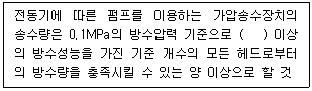
- 80 ℓ/min
- 90 ℓ/min
- 110 ℓ/min
- 130 ℓ/min
(정답률: 46%)
73. 다음 설명에 알맞은 요운전원 엘리베이터 조작방식은?
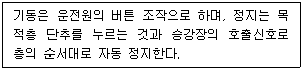
- 카 스위치 방식
- 전자동군관리방식
- 레코드 컨트롤 방식
- 시그널 컨트롤 방식
(정답률: 46%)
74. 가스설비에서 LPG에 관한 설명으로 옳지 않은 것은?
- 공기보다 무겁다.
- LNG에 비해 발열량이 작다.
- 순수한 LPG는 무색, 무취이다.
- 액화하면 체적이 1/250 정도가 된다.
(정답률: 47%)
75. 각종 급수방식에 관한 설명으로 옳지 않은 것은?
- 수도직결방식은 정전으로 인한 단수의 염려가 없다.
- 압력수조방식은 단수 시에 일정량의 급수가 가능하다.
- 수도직결방식은 위생 및 유지ㆍ관리 측면에서 가장 바람직한 방식이다.
- 고가수조방식은 수도 본관의 영향에 따라 급수압력의 변화가 심하다.
(정답률: 47%)
76. 길이 20m, 지름 400mm의 덕트에 평균속도 12m/s로 공기가 흐를 때 발생하는 마찰저항은? (단, 덕트의 마찰저항계수는 0.02, 공기의 밀도는 1.2kg/m3이다.)
- 7.3Pa
- 8.6Pa
- 73.2Pa
- 86.4Pa
(정답률: 26%)
77. 압축식 냉동기의 냉동사이클을 옳게 나타낸 것은?
- 압축 → 응축 → 팽창 → 증발
- 압축 → 팽창 → 응축 → 증발
- 응축 → 증발 → 팽창 → 압축
- 팽창 → 증발 → 응축 → 압축
(정답률: 71%)
78. 다음 중 급수배관계통에서 공기빼기밸브를 설치하는 가장 주된 이유는?
- 수격작용을 방지하기 위하여
- 배관 내면의 부식을 방지하기 위하여
- 배관 내 유체의 흐름을 원활하게 하기 위하여
- 배관 표면에 생기는 결로를 방지하기 위하여
(정답률: 56%)
79. 배수트랩의 봉수파괴 원인 중 통기관을 설치함으로써 봉수파괴를 방지할 수 있는 것이 아닌 것은?
- 분출작용
- 모세관작용
- 자기사이펀작용
- 유도사이펀작용
(정답률: 53%)
80. 저압옥내 배선공사 중 직접 콘크리트에 매설할 수 있는 공사는?
- 금속관공사
- 금속덕트공사
- 버스덕트공사
- 금속몰드공사
(정답률: 53%)
5과목: 건축법규
81. 판매시설 용도이며 지상 각 층의 거실면적이 2,000m2인 15층의 건축물에 설치하여야 하는 승용승강기의 최소 대수는? (단, 16인승 승강기이다.)
- 2대
- 4대
- 6대
- 8대
(정답률: 40%)
82. 다음 중 건축물 관련 건축기준의 허용되는 오차 범위(%)가 가장 큰 것은?
- 평면길이
- 출구너비
- 반자높이
- 바닥판두께
(정답률: 57%)
83. 다음 중 내화구조에 해당하지 않는 것은? (단, 외벽 중 비내력벽인 경우)
- 철근콘크리트조로서 두께가 7cm인 것
- 무근콘크리트조로서 두께가 7cm인 것
- 골구를 철골조로 하고 그 양면을 두께 3cm의 철망모르타르로 덮은 것
- 철재로 보강된 콘크리트블록조로서 철재에 덮은 콘크리트블록의 두께가 3cm인 것
(정답률: 37%)
84. 중앙도시계획위원회에 관한 설명으로 틀린 것은?
- 위원장ㆍ부위원장 각 1명을 포함한 25명 이상 30명 이하의 위원으로 구성한다.
- 위원장은 국토교통부장관이 되고, 부위원장은 위원 중 국토교통부장관이 임명한다.
- 공무원이 아닌 위원의 수는 10명 이상으로 하고, 그 임기는 2년으로 한다.
- 도시ㆍ군계획에 관한 조사ㆍ연구 업무를 수행한다.
(정답률: 53%)
85. 다음은 건축법령상 직통계단의 설치에 관한 기준 내용이다. ( ) 안에 알맞은 것은?
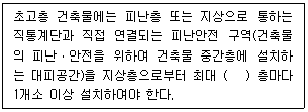
- 10개
- 20개
- 30개
- 40개
(정답률: 56%)
86. 다음은 승용 승강기의 설치에 관한 기준 내용이다. 밑줄 친 “대통령령으로 정하는 건축물”에 대한 기준 내용으로 옳은 것은?
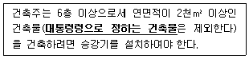
- 층수가 6층인 건축물로서 각 층 거실의 바닥면적 300m2 이내마다 1개소 이상의 직통계단을 설치한 건축물
- 층수가 6층인 건축물로서 각 층 거실의 바닥면적 500m2 이내마다 1개소 이상의 직통계단을 설치한 건축물
- 층수가 10층인 건축물로서 각 층 거실의 바닥면적 300m2 이내마다 1개소 이상의 직통계단을 설치한 건축물
- 층수가 10층인 건축물로서 각 층 거실의 바닥면적 500m2 이내마다 1개소 이상의 직통계단을 설치한 건축물
(정답률: 48%)
87. 주차장의 용도와 판매시설이 복잡한 연면적 20000m2인 건축물이 주차전용건축물로 인정받기 위해서는 주차장으로 사용되는 부분의 면적이 최소 얼마 이상이어야 하는가?
- 6,000m2
- 10,000m2
- 14,000m2
- 19,500m2
(정답률: 55%)
88. 건축법령상 건축을 하는 경우 조경 등의 조치를 하지 아니할 수 있는 건축물 기준으로 틀린 것은? (단, 옥상 조경 등 대통령령으로 따로 기준을 정하는 경우는 고려하지 않는다.)
- 축사
- 녹지지역에 건축하는 건축물
- 연면적의 합계가 2000m2 미만인 공장
- 면적 5000m2 미만인 대지에 건축하는 공장
(정답률: 50%)
89. 시가화조정구역에서 시가화유보기간으로 정하는 기간 기준은?
- 1년 이상 5년 이내
- 3년 이상 10년 이내
- 5년 이상 20년 이내
- 10년 이상 30년 이내
(정답률: 61%)
90. 공동주택과 오피스텔의 난방설비를 개별난방방식으로 하는 경우의 기준으로 틀린 것은?
- 보일러실의 윗부분에는 그 면적이 0.5m2 이상인 환기창을 설치할 것
- 보일러는 거실외의 곳에 설치하되, 보일러를 설치하는 곳과 거실사이의 경계벽은 출입구를 제외하고는 내화구조의 벽으로 구획할 것
- 보일러의 연도는 방화구조로서 개별연도로 설치할 것
- 기름보일러를 설치하는 경우 기름 저장소를 보일러실외의 다른 곳에 설치할 것
(정답률: 58%)
91. 건축물의 층수 산정에 관한 기준이 틀린 것은?
- 지하층은 건축물의 층수에 산입하지 아니한다.
- 층의 구분이 명확하지 아니한 건축물은 그 건축물의 높이 4m마다 하나의 층으로 보고 그 층수를 산정한다.
- 건축물이 부분에 따라 그 층수가 다른 경우에는 바닥면적에 따라 가중평균한 층수를 그 건축물의 층수로 본다.
- 계단탑으로서 그 수평투영면적의 합계가 해당 건축물 건축면적의 8분의 1 이하인 것은 건축물의 층수에 산입하지 아니한다.
(정답률: 45%)
92. 특별시장ㆍ광역시장ㆍ특별자치시장ㆍ특별자치도지사ㆍ시장 또는 군수가 관할 구역의 도시ㆍ군기본계획에 대하여 타당성을 전반적으로 재검토하여 정비하여햐 하는 기간의 기준은?
- 5년
- 10년
- 15년
- 20년
(정답률: 46%)
93. 국토의 계획 및 이용에 관한 법령상 주거지역의 세분 중 중층주택을 중심으로 편리한 주거환경을 조성하기 위하여 지정하는 용도지역은?
- 제1종일반주거지역
- 제2종일반주거지역
- 제1종전용주거지역
- 제2종전용주거지역
(정답률: 57%)
94. 사용승인을 받는 즉시 건축물의 내진능력을 공개하여야 하는 대상 건축물의 층수 기준은? (단, 목구조 건축물의 경우이며 기타의 경우는 고려하지 않는다.)
- 2층 이상
- 3층 이상
- 6층 이상
- 16층 이상
(정답률: 36%)
95. 특별피난계단의 구조에 관한 기준 내용으로 틀린 것은?
- 계단은 내화구조로 하되, 피난층 또는 지상까지 직접 연결되도록 한다.
- 계단실 및 부속실의 실내에 접하는 부분의 마감은 불연재료로 한다.
- 출입구의 유효너비는 0.9m 이상으로 하고 피난의 방향으로 열 수 있도록 한다.
- 건축물의 내부에서 노대 또는 부속실로 통하는 출입구에는 30분방화문을 설치하고, 노대 또는 부속실로부터 계단실로 통하는 출입구에는 60분방화문을 설치하도록 한다.
(정답률: 60%)
96. 건축허가 대상 건축물이라 하더라도 건축신고를 하면 건축허가를 받은 것으로 보는 경우에 속하지 않는 것은? (단, 층수가 2층인 건축물의 경우)
- 바닥면적의 합계가 75m2의 증축
- 바닥면적의 합계가 75m2의 재축
- 바닥면적의 합계가 75m2의 개축
- 연면적이 250m2인 건축물의 대수선
(정답률: 56%)
97. 건축지도원에 관한 내용으로 틀린 것은?
- 건축지도원은 특별자치시ㆍ특별자치도 또는 시ㆍ군ㆍ구에 근무하는 건축직렬의 공무원과 건축에 관한 학식이 풍부한 자 중에서 지정한다.
- 건축지도원의 자격과 업무 범위는 건축조례로 정한다.
- 건축설비가 법령 등에 적합하게 유지ㆍ관리되고 있는지 확인ㆍ지도 및 단속한다.
- 허가를 받지 아니하거나 신고를 하지 아니하고 건축하거나 용도 변경한 건축물을 단속한다.
(정답률: 44%)
98. 다음 노외주차장의 구조 및 설비기준에 관한 내용 중 ( ) 안에 알맞은 것은?
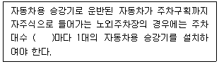
- 10대
- 20대
- 30대
- 40대
(정답률: 43%)
99. 비상용승강기의 승강장에 설치하는 배연설비의 구조에 관한 기준 내용으로 틀린 것은?
- 배연구 및 배연풍도는 불연재료로 할 것
- 배연구는 평상시에는 열린 상태를 유지할 것
- 배연구가 외기에 접하지 아니하는 경우에는 배연기를 설치할 것
- 배연기는 배연구의 열림에 따라 자동적으로 작동하고, 충분한 공기배출 또는 가압능력이 있을 것
(정답률: 65%)
100. 막다른 도로의 길이가 15m일 때, 이 도로가 건축법령상 도로이기 위한 최소 폭은?
- 2m
- 3m
- 4m
- 6m
(정답률: 47%)